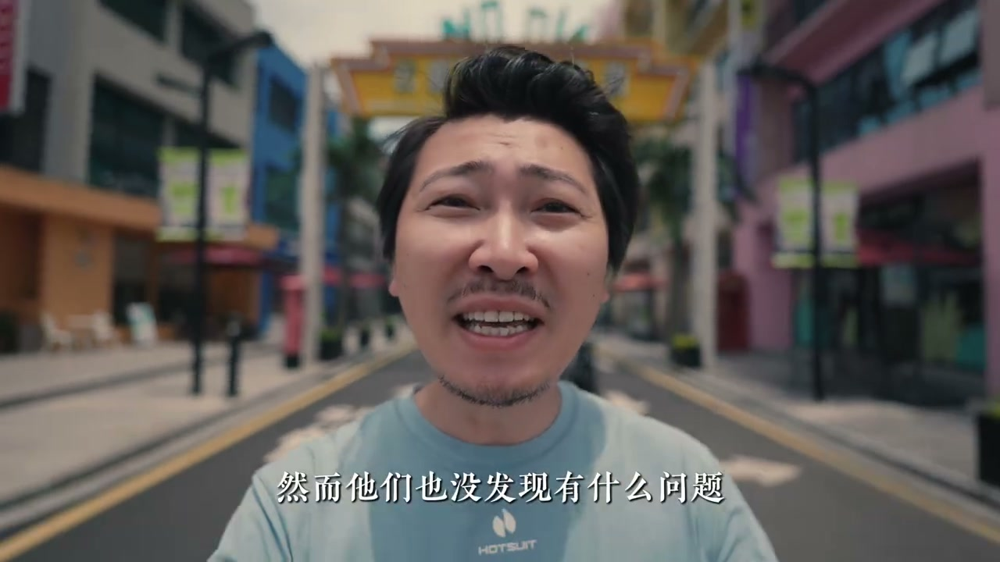
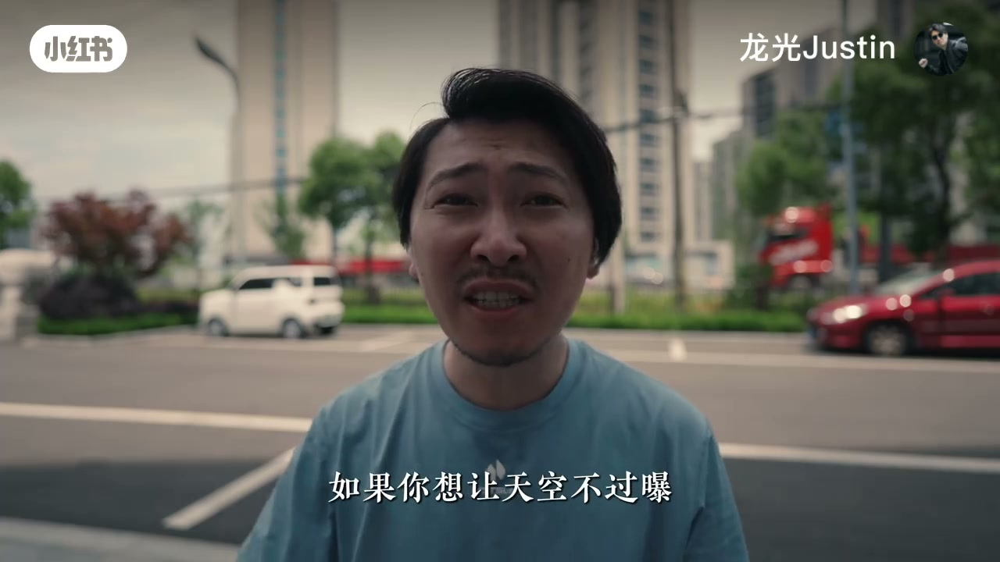
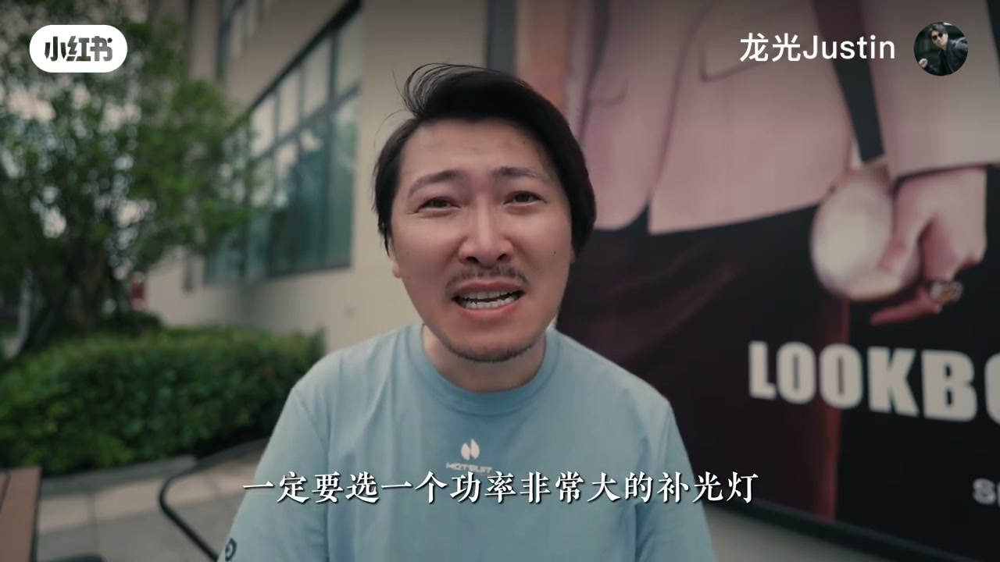
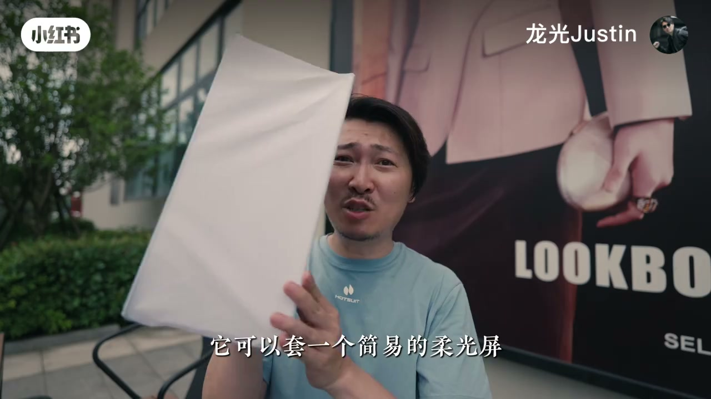
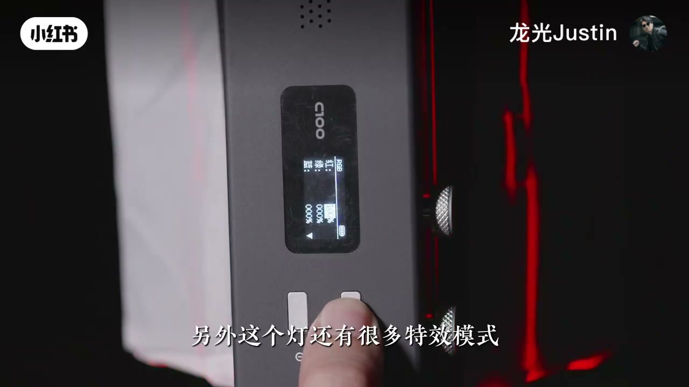

内容要点
一支 3 分钟的户外控光教学：博主指出户外拍 vlog 常见问题——阳光直射脸部产生硬边阴影，而电影里人物面部光影柔和，随后分享在户外拍出柔和面部的四种方法，并推荐一款 100W 便携 RGB 补光灯。
知识结构
[00:00→00:21]
问题引入
阳光直射脸部产生硬边阴影，而电影人物面部光影柔和。
[00:21→00:54]
方法一：阴凉处 & 方法二：背光+反光板
找阴凉处避免直射但要防天空过曝；背光拍脸黑，用反光板补柔光。
[00:54→01:16]
方法三：柔光屏
太阳与人之间放柔光屏，太阳光变柔和但会降亮度，需重新调整曝光。
[01:16→01:55]
方法四：树影下补灯
树影下背景可以是天空，只要面前补一盏大功率灯。
[01:55→03:04]
补光灯选购与特效
100W 内置电池便携灯，晚上降维打击，RGB 全彩可还原电影场景。
总结
户外柔光四法：①找阴凉处避免直射 ②背光拍摄+反光板补光 ③太阳与人之间放柔光屏 ④树影下+前置补光灯；户外白天补光务必选 100W 级大功率灯，10W/20W 等于没补。
问题：户外硬边阴影
博主指出很多人在户外拍 vlog 时脸上有硬边阴影却没发现问题。阳光直射脸部会有明显硬边阴影，而电影人物面部光影柔和。

方法一与二：阴凉处、背光+反光板
最简单是找阴凉处避免阳光直射，但背景别是天空否则光比过大。第二种背光拍摄会显脸黑，用反光板把光反射回脸上就柔和了。

方法三：柔光屏
在太阳和人之间放一个柔光屏，太阳光变柔和，但亮度会降低，需要重新调整曝光。这也是影视团队常用方法。

方法四：树影下补灯
待在树影下，背景可以是天空，只要在面前补一盏灯。户外白天补光一定要选大功率灯，10W/20W 便携灯补了等于没补，自己用的是 100W。

补光灯选购与场景还原
推荐 100W 内置电池便携灯，体积小巧、续航好、可配简易柔光屏；晚上降维打击，RGB 全彩可还原《绿皮书》雨夜争吵场景，还能模拟警车特效。
